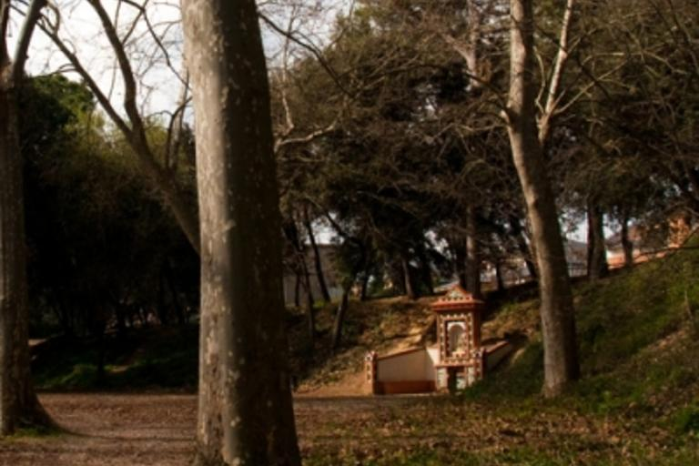

Visita · Palautordera
Resseguim el curs del Riu Sec amunt fins arribar a aquesta font. Les plantacions d’arbres com els plàtans i els pollancres, asseguren una bona ombra. Ha desaparegut la vegetació autèntica de…